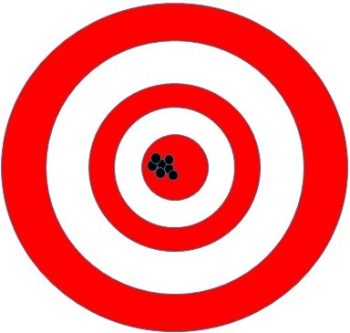
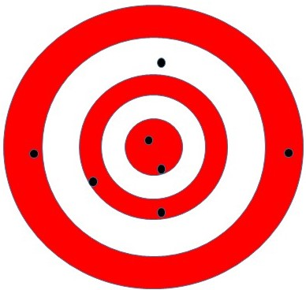

One of the most common questions people use statistics to help answer is “Are these groups the same or different?”
A between-subjects design uses different groups of people (or whatever) to see if it is more likely they are actually the same or different on a given measure. That’s a bit abstract, so let’s work through an example.
One of the most common between-subjects tests is the A/B test. In User Experience (UX) studies, companies might test whether different webpage designs net them more revenue due to the placement of different banners. Their question, then, is “Are these two banner placements probably the same or different when it comes to generating revenue?”
When comparing two groups on a continuous measure, the statistical test is called a t-test. There are other kinds of t-tests, but they all generally follow the same format, and here I’m talking about what’s called the Independent Samples t-test.
The t-test works by simply asking whether two groups are different enough from each other that it’s more likely to assume they come from different Populations than from the same Population (see Inference or Description for an overview of Populations and Samples). If the averages of these groups are larger than we would expect by sampling error alone, then we conclude that there’s probably a real difference between them.
The standard in psychology and many other sciences is to set the threshold for this decision at p < 0.05. What this means is that we would expect to randomly sample mean differences this big only 5% of the time (or less) if they were actually sampled from the same population. Therefore, we decide that it is more likely that the groups are actually drawn from different populations – we decide that the two groups are probably actually different.
Although the t-test is a very useful analysis, it is limited in a very important way. Specifically, the t-test works by subtracting the mean (average) of one group from the mean of the other group, and then dividing that difference by error. However, what happens if we have more than two groups?
Let’s imagine for a moment that you have three tiers of data scientists, and you wanted to test whether they are paid differently. The Data Scientist I is paid on average $30k, the Data Scientist II is paid on average $40k, and the Data Scientist III is paid on average $70k per year (as an aside: please do not pay your hard-working data scientists such low wages – these numbers are just easier for the math). Simply by looking at these numbers, it should be clear that at the very least, the lowest and highest paid groups are paid very differently. In fact the highest paid data scientist is paid more than twice the salary of the lowest paid data scientist. However, if we applied the logic of the t-test, we would get: 70,000 – 40,000 – 30,000 = 0. There you have it, there are no differences in the amount you pay your different tiers. Obviously, that would be a stupid test and a stupid result.
Instead of using t-test logic when we have three or more groups, we use what’s called an ANalysis Of VAriance (or ANOVA for short). The ANOVA, as might be guessed from the name, looks at ratios of variance instead of mean differences. Although it is beyond the scope of this page to teach you about variance, I will briefly overview the topic so you can more easily follow along (however, variance is incredibly important for all analyses, so I encourage you to check out my undergraduate lecture here).
Variance is a measure of how much variability is in your set of scores. Just like the mean gives us a number to represent the middle of an entire group of scores, variance gives us a number to represent whether the group of scores are all clustered together or are generally spread apart. Technically, the variance of a set of scores is the average squared difference between all of the scores. It’s not really necessary to fully understand that, but I again recommend my stats lecture if you’re interested.
In the picture below, the holes are spaced very close together.

In this picture, however, the holes are spaced much farther apart.

There would be a smaller value for the variance of the holes on the target from the first picture than from the second picture.
In a more business example, let’s return to our underpaid Data Scientists. In the first example, the three different classes of data scientist were paid on average $30k, $40k, and $70k per year. Imagine that you decided to overhaul your data scientists’ pay to attract better talent, so you begin to pay your three levels at $80k, $90k, and $100k. Now, although the means of these three pays are higher, the variance is lower. In fact, the range of the second group is only $20k whereas the range of the first group was $40k (range is another measure of variability, but it’s pretty worthless because it only tells you the difference between the highest and lowest values whereas variance uses all of the scores).
The ANOVA looks at a ratio of different kinds of variance. The variance that goes in the top of the ratio (the numerator) is the variance between the averages of the group. So, it would be the variance between $30k, $40k, and $70k or $80k, $90k, and $100k. The bottom of the fraction (the denominator) is the variance we would expect by chance (our error). The final value of this ratio is then checked to see whether there is more variability between the means than we would expect by chance, and if it is, we conclude that the groups are probably different (technically we can only conclude that at least one group is different from the others).
Between-subjects designs are a very useful tool, but they have their limitations. First, you will need a lot of participants to be able to detect any differences between your groups. If you have lots of data, though,that’s not really a big deal. A more important problem is that the designs assume the groups are roughly the same, but it takes a logical leap to infer that the treatment is the only cause of any differences you observe in your groups. In other words, you can’t tell how a specific person changes in response to your conditions.
Between-Subjects designs are used to see whether two groups of things are more likely the same or different. You can use them to test whether different groups of your employees are paid differently, whether different banner placement on your websites generate more revenue, or whether different teams work more hours than others.